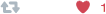
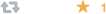

StarHeart for Twitter/Tweetdeck replaces the heart shape on Twitter's Like button with classic star we all know and love.
Tweaks
Version 2.0 comes packed like a hot pocket with a new feature: Tweaks. Tweaks are exactly what they sound like, optional little changes to Twitter and Tweetdeck that improve your experience. Most Tweaks have 2 checkboxes, one for Twitter and one for Tweetdeck, so you can apply the Tweak to them individually. Keep in mind that the more Tweaks you have active at once, the slower the page will load (only slightly, but the impact is there).
Tweaks for both Twitter and Tweetdeck:
- Replace Hearts with Stars
This is the main feature of StarHeart and is enabled by default. Don't know why you'd want to disable it, but you can. - Hide Retweets
This currently supports your own timeline, due to the way Twitter marks Tweets as retweeted (working on it), but if you want to look through your posts without retweets in the way, you can. - Circle Icons
This is everyone's favorite. Who doesn't use a third-party Twitter app and like round icons? Here you go.
Some Tweaks can only apply to Twitter.com, because Tweetdeck doesn't have the things they change. These are the Tweaks exclusive to Twitter.com:
- Remove Twitter Moments
For all you introverts out there. - Remove "Who to Follow" Suggestions
For all you hermits out there. - Remove Trends
For all you hipsters out there.